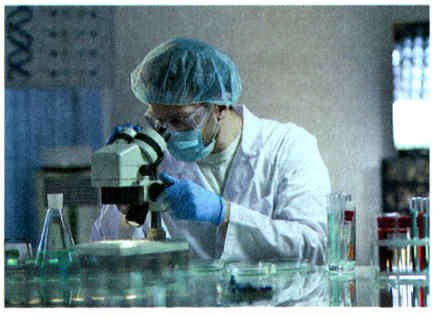
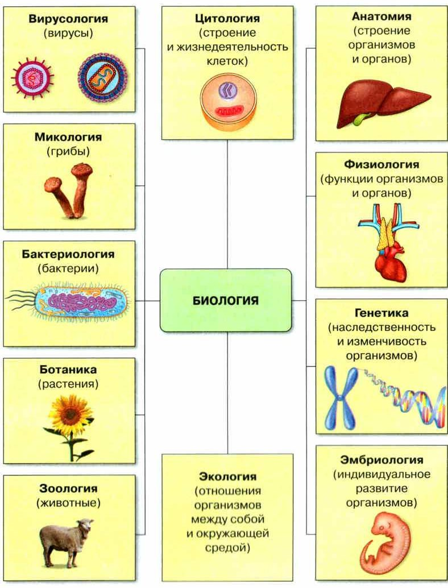
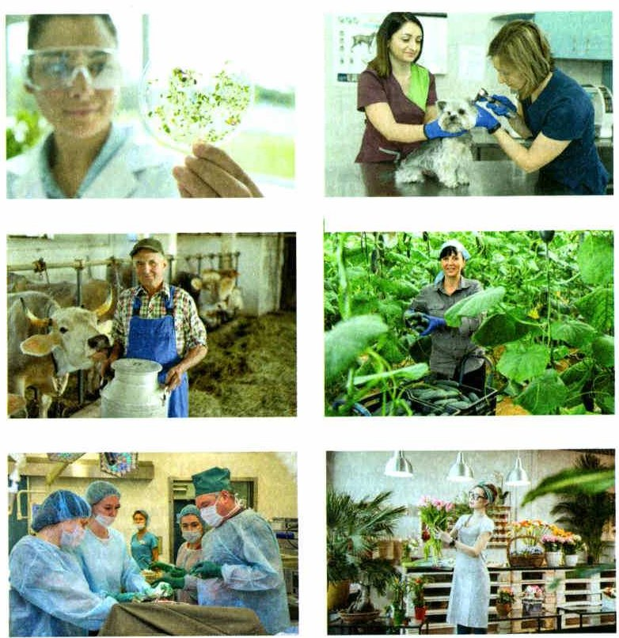
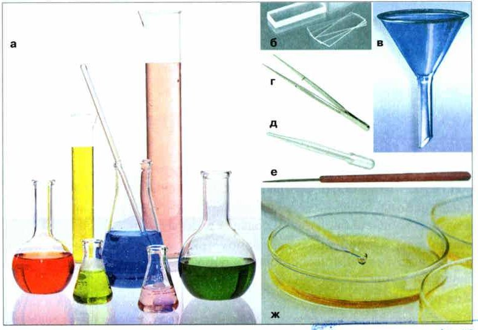

Понятие о науке
Один из способов узнавать мир — наука. Людей, которые занимаются наукой профессионально, называют учёными (рис. 9).
Учёные работают в научных лабораториях. Там есть специальное оборудование, чтобы проводить исследования и разбирать полученные данные.
Наук сегодня очень много. Чем одна наука отличается от другой? У каждой есть свои объекты (что изучает), задачи, методы (как изучает) и свой язык.
Одним из способов изучения и познания окружающего мира для человека является научная деятельность, или наука. Людей, профессионально занимающиеся научной деятельностью, называют научными работниками, или учёными (рис. 9). Основным местом их работы являются научные лаборатории, оснащённые соответствующим оборудованием, позволяющим проводить специальные исследования и обрабатывать полученные научные данные.
На сегодняшний день существует множество различных наук или научных областей. Говоря о любой науке, мы должны чётко представлять себе основные черты исследований в её области, отличающие эту науку от исследований в других научных областях. Каждую науку характеризуют, прежде всего, её объекты исследования, задачи, способы изучения (методы) и язык.

1. Где работают учёные и зачем им там специальное оборудование?
2. По каким четырём чертам одну науку отличают от другой?
Биология — система наук о живой природе
Биология — одна из самых древних наук. Её название сложено из двух греческих слов: биос — жизнь и логос — наука.
Сегодня биология — это не одна наука, а целая семья наук. Все они изучают живые организмы и то, что в них и с ними происходит.
Объект исследования — это то, что изучает учёный. Для биолога это живые организмы, процессы и явления в живой природе.
По тому, что изучают, биологию делят на разделы (рис. 10). У каждого раздела — свои задачи. Например: ботаника изучает растения, зоология — животных, цитология — клетки, анатомия — строение организмов, физиология — как организм работает. А ещё есть микология — она изучает грибы — и экология: как организмы связаны друг с другом и с окружающей средой.
Одной из древнейших научных областей, занимающихся познанием окружающего мира, является биология (др. греч. биос — жизнь и логос — наука). В настоящее время этим термином называют целый комплекс научных направлений, объектами исследований которых являются живые организмы либо процессы или явления, протекающие в них или с их участием.
Объект исследования — это то, что непосредственно изучает учёный в своей области науки. Как правило, в качестве объекта в биологических исследованиях выступают реальные проявления жизни (объекты живой природы) на нашей планете Земля, различные процессы и явления в живой природе.
В зависимости от изучаемых объектов исследований выделяют основные разделы биологии (рис. 10). Перед каждым из них стоят свои собственные задачи исследований, решение которых приводит к обобщению и накоплению научных результатов. Например, ботаника изучает растения, зоология — животных, цитология — клетки, анатомия — особенности строения объектов живой природы, физиология — особенности их жизнедеятельности и др.
На рис. 10 есть и другие разделы: микология (грибы), вирусология, бактериология, генетика, эмбриология и экология (отношения организмов между собой и с окружающей средой).

3. Почему биологию называют не просто наукой, а системой наук?
4. Что изучают ботаника и цитология? Что у них общего?
Связь биологии с другими науками
Биология дружит с другими науками, особенно с физикой и химией. Сегодня большинство открытий делают на стыке наук. Так появились новые науки: биофизика, биохимия, космическая биология. А ещё биоинженерия и биотехнология — они ищут, как использовать живое (и даже изменённое человеком) для решения важных задач людей.
Очень важна связь с математикой. Без расчётов не обходится ни одна наука. Интересно, что с помощью математики и компьютеров можно моделировать то, что происходит в живой природе. Так недавно появилась биоинформатика — она разбирает огромные объёмы биологических данных.
Важна и связь с географией — она изучает в основном неживую природу Земли. На стыке появилась биогеография: она изучает, где на планете живут организмы.
Современная биология тесно связана с другими науками, особенно с теми, что занимаются познанием окружающего мира. Среди них можно выделить физику и химию. В настоящее время большинство открытий в науке делается, как правило, на стыке нескольких научных направлений. В результате чего возникли такие науки, как биофизика, биохимия, космическая биология и др., а также прикладные направления — биоинженерия и биотехнология, ориентированные на изучение возможности применения объектов живой природы, в том числе искусственно модифицированных (изменённых человеком), для решения различных насущных проблем человечества.
Крайне важна связь биологии с такой наукой, как математика. Без применения математических, в том числе статистических, расчётов не обходится ни одно научное направление, и биология не является исключением. Особенно интересными исследованиями в области математической биологии является моделирование биологических процессов и явлений. Огромную помощь в этом биологам оказывает применение современной компьютерной техники. В результате относительно недавно возникло ещё одно направление в биологии — биоинформатика. Это направление биологии ориентировано на решение крупномасштабных научных проблем, требующих анализа большого объёма биологических данных.
Не менее важна связь биологии с географией, наукой изучающей, прежде всего, объекты неживой природы, существующие на нашей планете. Примером междисциплинарной связи этих двух наук является такое научное направление, как биогеография, которая изучает закономерности географического распространения и распределения объектов живой природы на нашей планете.
5. Какие новые науки появились на стыке биологии с физикой, химией и географией?
6. Зачем биологу математика и компьютер?
Профессии, связанные с биологией
Кроме учёных, есть много профессий, где нужна биология (рис. 11). Любую из них ты можешь выбрать в будущем.
Биология нужна всем медикам: врачам, фельдшерам, медсёстрам, а ещё психологам. Она очень важна для сельского хозяйства: агрономам, зоотехникам, ветеринарам. Нужны специалисты по микробиологии и биотехнологии. Становятся популярными профессии, связанные с экологией: инженер-эколог, ландшафтный дизайнер.
Помимо учёных, которые профессионально занимаются изучением научных проблем в различных областях биологии, существует множество профессий, так или иначе связанных с биологией (рис. 11), и любую из них в будущем вы можете выбрать для себя.
Практически все медицинские работники (врачи, фельдшеры, медсёстры) специалисты в области психологии (психологи) должны иметь базовое биологическое образование. Большое значение биологические знания имеют для подготовки работников сельского хозяйства: агрономов, зоотехников, ветеринаров и др. Всё больше специалистов требуется для бурно развивающихся направлений — микробиологической промышленности и биотехнологии. Всё большую популярность получают профессии, связанные с экологией, например такие, как инженер-эколог или ландшафтный дизайнер.

▲ Определи, люди каких профессий на фотографиях, — это задание 1 в «Моей лаборатории».
7. Каким работникам сельского хозяйства нужны биологические знания?
8. Какие профессии, связанные с экологией, называет учебник?
Кабинет биологии
В современных лабораториях много сложных и дорогих приборов, например электронные микроскопы. Чтобы с ними работать, нужны особые знания.
Свои исследования ты будешь проводить в кабинете биологии. Там тоже есть приборы, инструменты и другое лабораторное оборудование (рис. 12).
Что для чего:
• воронка — переливать жидкости;
• пипетка и мерный цилиндр (мензурка) — отмерить нужное количество жидкости;
• шпатель — переносить твёрдые вещества;
• предметные стёкла, пинцет, препаровальная игла — готовить препараты для микроскопа;
• термометр — измерять температуру, весы — массу;
• чашка Петри — выращивать и изучать микроорганизмы.
В кабинете важно правильно обращаться с оборудованием и строго соблюдать правила безопасной работы. Они ниже — выучи их!
В современных биологических лабораториях используются самые различные, иногда очень сложные и дорогие, приборы и инструменты — электронные микроскопы, хромотографы и др., для работы с которыми требуются специальные знания и навыки.
Свои биологические исследования вы будете проводить в школьном кабинете биологии. В нём вы также будете использовать различные приборы, инструменты и другое лабораторное оборудование. Многие из этих приборов вам хорошо знакомы, с другими вы встретитесь впервые (рис. 12).
Например, для переливания жидкостей применяют воронки, для отбора определённого количества жидкости — пипетки и мерные цилиндры (мензурки), для перенесения твёрдых веществ — шпатели. Часто при приготовлении препаратов, рассматриваемых под микроскопом, используют предметные стёкла, пинцет и препаровальные иглы. Прибором для измерения температуры является термометр. Для измерения массы применяют весы. Для выращивания и изучения различных микроорганизмов применяют чашки Петри.
При проведении лабораторных работ в школьном кабинете биологии важно правильно использовать имеющееся оборудование и строго соблюдать правила техники безопасности при работе с ним (см. памятку на с. 19). Выучи и строго выполняй эти правила!

- Точно выполняй все указания учителя. Без разрешения не выполняй никаких работ. В лаборатории: нельзя есть, а лабораторную посуду нельзя использовать для еды и питья; нельзя без разрешения трогать приборы и материалы; нельзя нюхать незнакомые вещества, поднося их к лицу — пары могут вызвать раздражение и ожог дыхательных путей; если что-то трудно — сразу обратись к учителю; работай аккуратно, а после работы верни всё на место и наведи порядок.
- Внимательно изучи, что и в каком порядке делать, и как делать это безопасно.
- Подготовь рабочее место, убери лишнее. Поставь приборы так, чтобы они не упали и не опрокинулись.
- Проверь, что оборудование исправно, а стеклянная посуда цела.
- Нагревай жидкость в пробирке или колбе только в держателе (штативе). Никогда не направляй отверстие нагреваемой пробирки на себя или на одноклассников.
- Не бери горячую посуду незащищёнными руками.
- Осторожно обращайся с острыми инструментами и стеклом: не бросай, не роняй, не ударяй.
- Разбилась посуда — не собирай осколки руками, возьми щётку и совок. Сначала скажи учителю.
- Если разлилась и загорелась горючая жидкость — сразу скажи учителю и по его указанию выйди из кабинета.
- Если кто-то поранился — скажи учителю, окажи первую помощь, при необходимости отправьте пострадавшего к врачу.
- После работы наведи порядок, сдай учителю приборы и материалы и, если нужно, тщательно вымой руки с мылом.
9. Для чего в кабинете нужны воронка, пипетка и мерный цилиндр? А чашка Петри?
10. Почему нельзя нюхать незнакомое вещество, поднося его к лицу?
11. Разбилась пробирка. Что делать по правилам?
Итоги и «Моя лаборатория»
Наука · Биология · Разделы биологии: ботаника, зоология, экология, цитология, анатомия, физиология · Профессии, связанные с биологией · Кабинет биологии · Лабораторное оборудование
- Что такое биология? Какие признаки характеризуют её как науку?
- Каковы основные разделы биологии? Что является объектами их изучения?
- Какие связи имеет биология с другими науками? Приведите примеры наиболее перспективных направлений междисциплинарных исследований.
- Какие профессии связаны с биологией? В чём эта связь выражается?
- Назовите известных вам учёных-биологов. В чём заключается их научный вклад в развитие биологической науки?
- Почему важно соблюдать правила поведения и работы в кабинете с биологическими приборами, инструментами и объектами?
- Какие из важных правил работы в лаборатории следует применять в быту? Приведите примеры.
- Внимательно рассмотрите представленное лабораторное оборудование.
- Выучите правила поведения и работы в кабинете с биологическими приборами и инструментами (памятка в разделе 5).
- Заполните в тетради таблицу «Лабораторное оборудование кабинета биологии и правила безопасной работы с ним» по образцу: вид оборудования — особенности и назначение — правила безопасной работы.
Образец из учебника
Вид оборудования: мерные стаканы, мерные цилиндры и мензурки.
Особенности, назначение: мерная химическая посуда — чтобы измерить объём жидкости или перелить её в другую посуду.
Правила: 1) обращаться осторожно — могут быть хрупкими; 2) не трогать руками осколки, если разбились; 3) не использовать для еды и питья; 4) не нагревать.
- Рассмотрите рис. 11. Определите, люди каких профессий представлены на фотографиях. В тетради заполните таблицу «Профессии, связанные с биологией»: фотография — профессия — как связана с биологией.
- Выясните, кто из ваших знакомых имеет профессию, связанную с биологией. Каково их мнение о своей профессии? Почему они её выбрали?
- Подготовьте мультимедиа презентацию об интересующей вас профессии или о вкладе конкретного учёного (российского или зарубежного) в развитие биологии как науки.
Люди изучают живую природу с глубокой древности.
Древнегреческий учёный Аристотель (384—322 до н. э.) заложил основы зоологии. Его ученика Теофраста (около 370 — около 288 до н. э.) называют отцом ботаники.
Гиппократа (около 460 — около 370 до н. э.) называют отцом медицины: он поставил медицину на научную основу. Он писал, что лечить надо не болезнь, а больного человека, и что врач не имеет права навредить пациенту. До сих пор выпускники медицинских институтов дают клятву Гиппократа.
Римский врач Клавдий Гален (около 130 — около 200) много лет лечил раненых гладиаторов, поэтому прекрасно знал строение тела человека. Он написал 83 книги по анатомии и медицине, и почти полторы тысячи лет по ним учились врачи. Гален стал основателем фармакологии — науки о лекарствах.
Изучение живой природы и накопление научных знаний о ней происходит с глубокой древности. Так, великий древнегреческий учёный Аристотель (384—322 до н. э.) заложил научные основы зоологии. Его ученика и последователя Теофраста (ок. 370 — ок. 288 до н. э.) называют отцом ботаники, так как он был основателем ботаники как самостоятельной науки. Другого известного древнегреческого учёного Гиппократа (ок. 460 — ок. 370 до н. э.) называют отцом медицины потому, что он поставил медицину на научную основу. Он собрал в своих трудах имевшиеся к тому времени знания о строении организма человека. Гиппократ писал о том, что лечить надо не болезнь, а больного человека и при лечении врач не имеет права нанести вред здоровью своего пациента. Ведь недаром в наши дни все выпускники медицинских институтов торжественно дают клятву Гиппократа.
Учеником и последователем Гиппократа считал себя великий римский врач Клавдий Гален (ок. 130 — ок. 200), много лет лечивший раненых гладиаторов и потому прекрасно разбиравшийся в строении организма человека. Он написал 83 труда по анатомии и медицине, и эти книги в течение почти полутора тысяч лет были авторитетным источником знаний для врачей, анатомов и физиологов. Гален стал основателем современной фармакологии — науки о лекарствах.
О вкладе других учёных, в том числе и отечественных, в развитие научных знаний вы узнаете при изучении различных разделов биологии.
- Сначала придумай сценарий и собери материалы, потом оформляй слайды. Не забудь указать источники.
- Все слайды в одном стиле. На слайде — не больше трёх цветов: фон, заголовки, текст. Фон и текст — контрастные.
- Короткие слова и предложения. Заголовки — чтобы цепляли внимание. Один шрифт на всю презентацию, поменьше заглавных букв.
- Не перегружай слайд: слушатели запоминают не больше трёх фактов за раз. Подпись к картинке — прямо под ней.
- Главное важнее украшений. Не увлекайся анимацией.
- Оптимально — 10—15 слайдов, примерно минута на слайд.
Проверь себя
Ошиблась — не страшно, попробуй другую кнопку.
Как устроены лапки у дегу
Дегу — животное. Животных изучает зоология.
Подсолнух
Растения — ботаника (на рис. 10 у ботаники как раз подсолнух).
Грибы, которые ты нашла в лесу
Грибы — микология.
Из чего состоит клетка листа
Клетки — цитология.
Почему дождевые черви вылезают после дождя
Связь организма с окружающей средой — экология.
Муравьи на муравьиной ферме
Муравьи — животные, значит, зоология.
Воронка
Воронка — переливать жидкости.
Пипетка
Пипетка — отобрать немного жидкости.
Предметное стекло
На предметное стекло кладут то, что будут рассматривать в микроскоп.
Препаровальная игла
Ею готовят препараты.
Термометр
Термометр измеряет температуру.
Весы
Весы измеряют массу.
Чашка Петри
В чашках Петри выращивают и изучают микроорганизмы.
Съесть бутерброд за лабораторным столом
В лаборатории есть нельзя.
Налить сок в мензурку
Лабораторную посуду нельзя использовать для еды и питья.
Понюхать незнакомое вещество, поднеся к носу
Пары могут обжечь дыхательные пути.
Собрать осколки щёткой и совком
Так и надо — а руками нельзя. И сначала сказать учителю.
Направить нагреваемую пробирку на соседа
Никогда не направляй отверстие нагреваемой пробирки на людей.
Убрать рабочее место и вымыть руки после работы
Так и надо по правилам.
1. Кто такие учёные?
2. Что изучает цитология?
3. Какая наука появилась на стыке биологии и химии?
4. Для чего нужна чашка Петри?
5. Кого называют отцом медицины?
6. Кто заложил научные основы зоологии?
Расскажи вслух
Что такое наука и кто такие учёные
- Наука — научная деятельность, способ познания мира.
- Учёные — научные работники, работают в лабораториях с оборудованием.
- Каждую науку характеризуют объекты исследования, задачи, методы и язык.
Разделы биологии
- Биология (биос + логос) — комплекс наук о живой природе.
- Разделы выделяют по объектам: ботаника — растения, зоология — животные, цитология — клетки.
- Анатомия — строение, физиология — жизнедеятельность, экология — связи организмов со средой.
Связь биологии с другими науками
- С физикой и химией — биофизика, биохимия.
- С математикой и компьютерами — моделирование, биоинформатика.
- С географией — биогеография.
Профессии, связанные с биологией
- Медицина: врачи, фельдшеры, медсёстры; психологи.
- Сельское хозяйство: агрономы, зоотехники, ветеринары.
- Биотехнология; экология: инженер-эколог, ландшафтный дизайнер.
Правила работы в кабинете биологии
- Выполнять указания учителя, без разрешения ничего не трогать.
- Не есть в лаборатории и не пить из лабораторной посуды, не нюхать незнакомые вещества.
- Нагревать в держателе, осколки собирать щёткой и совком, после работы — порядок и чистые руки.